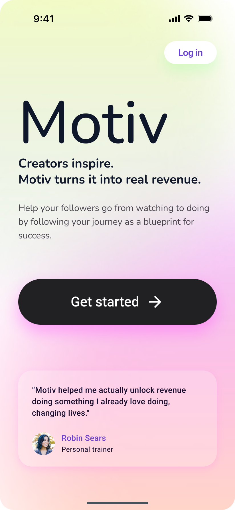
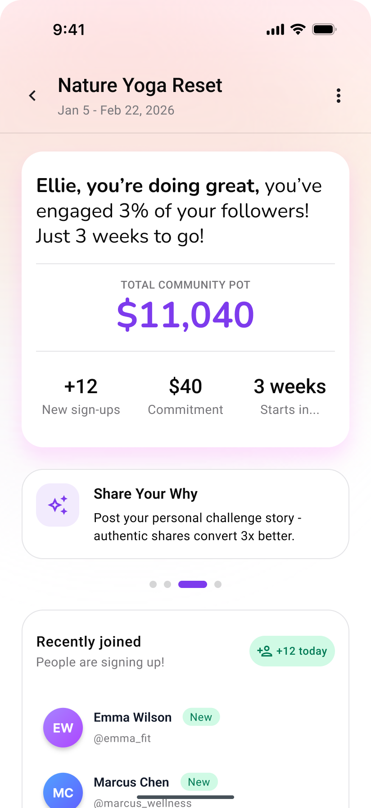

See It In Action
 Creator Celebration
Defines the celebration moment and reward visual language
Welcome Screen
Designer set the gradient palette and tone. AI produced the layout.
Personality Results
Designer set the reveal moment. AI executed with the right tokens.
Challenge Win
Designer chose the celebration approach. AI built it with the system.
Settings
AI applied list patterns, spacing, and icon styling from the system
Empty State
AI generated an encouraging empty state using brand colors and patterns
Notification Settings
AI used toggle patterns and section grouping from the designer's work
Creator Celebration
Defines the celebration moment and reward visual language
Welcome Screen
Designer set the gradient palette and tone. AI produced the layout.
Personality Results
Designer set the reveal moment. AI executed with the right tokens.
Challenge Win
Designer chose the celebration approach. AI built it with the system.
Settings
AI applied list patterns, spacing, and icon styling from the system
Empty State
AI generated an encouraging empty state using brand colors and patterns
Notification Settings
AI used toggle patterns and section grouping from the designer's work
Designers set the standard. AI carries it forward.
From a real project: designers crafted the key moments, then AI generated the rest using the same system. Click any interactive preview to expand.
Designed by humans
The moments that define how the product feels. Designers craft these from scratch — setting the emotional tone, visual language, and key interactions.

Onboarding Welcome
Sets the gradient palette, typography hierarchy, and emotional tone

Challenge Dashboard
Establishes card patterns, data layout, and navigation structure
Co-designed with AI
AI takes a first pass using the design system, then designers refine until it feels right. Click any preview to expand.
Generated by AI from the system
No designer input needed. AI generates these directly from the extracted design system — correct tokens, patterns, and spacing. Click to expand.